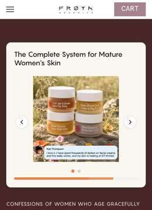
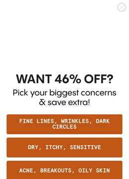
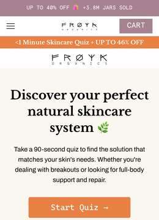
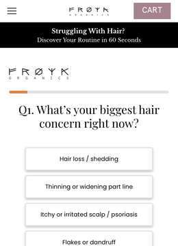
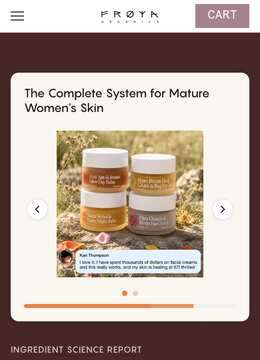
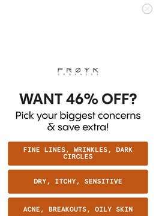
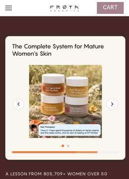
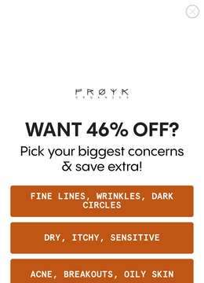
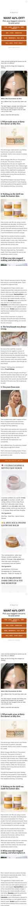
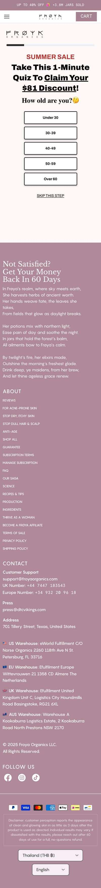

153 live creatives. 71 blocks of copy. 304 pages captured, 119 of them funnel pages. And nine different Facebook pages running the ads — a brand page, four invented health personas, and four real names.
One argument, nine mouths. The same Harvard-study copy — “We've Been Applying Anti-Aging Creams Wrong For 30 Years” — runs from the Frøya Organics page, from Anne's Skincare Blog, from Dr. Amy, from Nordic Wellness Secrets, from Dr. Susan. The product never appears in the hook. What appears is a study, a doctor, or a woman who found something.
The mechanic underneath is a single substitution: water is the enemy, oil is the answer. Every angle restates it — luxury creams are 70–90% water, water needs preservatives, preservatives do nothing for menopausal skin, so use a waterless Arctic balm instead. Botox, filler, retinol and peptides each get their own page arguing the same substitution against a different incumbent.
Creative is majority static (99 of 153) and very long-lived: six creatives have been running 494–589 days. This is not a testing operation. It is a small set of proven arguments, cloned across identities and left to run.
Nine advertising pages, not one. Frøya Organics (106 creatives) plus Anne's Skincare Blog (14), Dr. Amy (12), Nordic Wellness Secrets (7), Dr. Susan (2), Maggie Jones (2), Dr. Francesca LeBlanc, DC, DNM, CNS (3) — and real names: Abigail Spencer (6) and Ian Somerhalder (1). The persona pages carry the same copy as the brand page; only the face changes.
Every persona has a matching landing page. /pages/abigail-spencer-1, /pages/ian-somerhalder-1, /pages/dr-francesca-leblanc, /pages/dr-becky-campbell-froya-organics, /pages/dr-jessica-peatross-froya-organics, plus nikki-reed, sophia-bush, jana-kramer, christina-milian-1, daniella-monet, jamie-lynn-sigler, sarah-wayne-callies. The ad identity and the page identity are built as a pair.
One study does the heaviest lifting. The “Harvard Study” block and its variants carry 598 running ad variants across four blocks — the single biggest bet in the library, and the one cloned across the most identities.
The argument is a substitution, not a benefit. Water → oil. “Most luxury skincare is 90% water. That's why it needs so many preservatives. That's why it does nothing for menopausal skin.” Every villain page — botox-lie, the-filler-lie, peptide-truth, listicle-arctic-vs-retinol — restates it against a different incumbent.
They target the treatment, not the competitor. Botox, filler, retinol and peptides are the named enemies. The one competitor page they do run is /pages/froya-organics-vs-norse-organics — Norse Organics, a brand already in this swipe library.
Menopause is stated, not implied. “I hit menopause and…”, “healthy, wrinkle-free skin through perimenopause”, /pages/skin-after-50, /pages/acn-acne-lp-menopause. The life stage is the segment, and it is said out loud in the copy.
Four complaint territories off one brand: mature skin, acne (/pages/acne, the “big pharma wants to shut down” listicles), psoriasis/eczema (pso-ecz-steroids-vs-botanicals), and hair/scalp (hair-quiz, buffet-for-hair-and-scalp, hair-glp-1). Same balms, four markets.
The funnel pages are built in ConvertFlow, not the theme. Quiz options carry cf-quiz-option-label classes and page slugs admit it — cf-10-reasons-why, croevolution-listicle-v1, quiz-form-test. Their listicles and quizzes are assembled in a CRO tool and dropped onto Shopify pages.
Evergreen, not iterative. Longest-running creatives: 589, 553, 552, 525, 521, 494 days. Six ads have been live over 16 months — the library is a vault of proven arguments, re-cloned rather than replaced.
Static carries it. 99 of 153 creatives are stills and only 54 are video, which is the inverse of most DR skincare accounts we have swept.
Proof by counter, again. “+3.8M jars sold”, “805,709+ happy customers”, “What 88,429 Women Know That You Don't”, “#1 in Women's Health”. Numbers as credentials, the same device Mars Men runs.
The clearance block — “Add CLEAR50 at checkout 🎁” — is the widest by creative count (26), but the Harvard-study blocks are the widest by cloning: 340 and 204 running variants off 22 and 10 creatives. Below those, a long tail of one- and two-creative blocks, most of them first-person: “Everyone asks if I've had work done”, “I Wasted $2,000 On This…”, “My secret skincare routine”.
| Creatives | Angle | Format | Landing page | The ads |
|---|---|---|---|---|
| 26 | Add CLEAR50 at checkout 🎁 | static | unresolved | — |
| 22 | Harvard Study: “We’ve Been Applying Anti-Aging Creams Wrong For 30 Years.” | 5v/17s | unresolved | — |
| 10 | Harvard Study: “We’ve Been Applying Anti-Aging Creams Wrong For 30 Years.” | video | unresolved | — |
| 4 | Study: “We’ve Been Applying Anti-Aging Creams Wrong For 30 Years.” | static | unresolved | — |
| 4 | Find your perfect balm in 2 minutes 🧊💧 | static | unresolved | — |
| 3 | Your skincare is making you age faster 🤯 | 2v/1s | unresolved | — |
| 3 | Warning: LOW STOCK | static | unresolved | — |
| 3 | Side effect: Younger skin | 1v/2s | unresolved | — |
| 3 | [Simple Wrinkle Fix] | 2v/1s | unresolved | — |
| 2 | Arctic Skincare > Chemical Skincare ❌ | video | unresolved | — |
| 2 | Retinol thins your skin [Try the real fix] | static | unresolved | — |
| 2 | Everyone asks if I’ve had “work done” | video | unresolved | — |
| 2 | I Wasted $2,000 On This… | video | unresolved | — |
| 2 | Dark Circles Gone in 7 days (or less) | static | unresolved | — |
| 2 | What 88,429 Women Know That You Don't | static | unresolved | — |
| 2 | What The Beauty Industry Hides From You 🤫 | video | unresolved | — |
| 2 | This is what I use now [OBSESSED!] | static | unresolved | — |
| 2 | [Skin hack] Counterintuitive plan for mature skin | static | unresolved | — |
| 2 | Your Skin Needs Support, Not Stress | static | unresolved | — |
| 2 | Study: “We’ve Been Applying Anti-Aging Creams Wrong For 30 Years.” | video | unresolved | — |
| 2 | Science Proves Arctic Herbs Work ❄️ | video | unresolved | — |
| 2 | Everything You Knew About Peptides Is Wrong 🧬 | video | unresolved | — |
| 1 | My secret skincare routine [dewy glow] | static | unresolved | — |
| 1 | Approved by Dermatologists | video | unresolved | — |
| 1 | So effective people think it’s witchcraft. | static | unresolved | — |
| 1 | I refused to put POISON on my skin another day | video | unresolved | — |
| 1 | “My skin cells are waking up!” | static | unresolved | — |
| 1 | Side-effect: my skin is glowing | static | unresolved | — |
| 1 | Wait … this actually works! [natural glow] | video | unresolved | — |
| 1 | Redness & Itching GONE immediately | static | unresolved | — |
| 1 | Archaeologists Discovered A Balm That Stops Wrinkles 👀❄️ | video | unresolved | — |
| 1 | Why Women Over 40 Are Buying This Little Balm in Bulk | static | unresolved | — |
| 1 | Viking skincare still wins 🛡️🌿 | video | unresolved | — |
| 1 | Acne treatment that actually works | static | unresolved | — |
| 1 | Dermatologists Love This One Plant | video | unresolved | — |
| 1 | Hyper Potent Natural Skincare for Busy Moms ♥️ | video | unresolved | — |
| 1 | Arctic Skincare (Loved by 176K women) | static | unresolved | — |
| 1 | Your skin isn’t failing. It’s pushing back. | video | unresolved | — |
| 1 | Anti Aging That Actually Works | static | unresolved | — |
| 1 | The real reason your face changes with age. | video | unresolved | — |
| 1 | One Balm, One Serum, Done ✨ | static | unresolved | — |
| 1 | Little Arctic Anti-Age Secret 🌿 | static | unresolved | — |
| 1 | Anti Aging That Actually Works | static | unresolved | — |
| 1 | Here it is! | video | unresolved | — |
| 1 | Psoriasis or Eczema? This Balm Keeps Selling Out for a Reason | static | unresolved | — |
| 1 | This is how to stop aging 🫣 | video | unresolved | — |
| 1 | Real Transformations 💛 | video | unresolved | — |
| 1 | Skincare That Actually Works | static | unresolved | — |
| 1 | Enjoy the Sun. Not the Spots ☀️ | static | unresolved | — |
| 1 | Nothing Diluted. Not Even Her Skin. | static | unresolved | — |
| 1 | Botox doesn't erase wrinkles. It erases expressions 💉 | static | unresolved | — |
| 1 | One Balm, One Serum, Done ✨ | static | unresolved | — |
| 1 | Science Proves Arctic Herbs Work ❄️ | static | unresolved | — |
| 1 | 91.18% felt more hydrated | static | unresolved | — |
| 1 | “My skin cells are waking up!” | static | unresolved | — |
| 1 | Here is what Science didn’t tell you | static | unresolved | — |
| 1 | This Isn’t Skincare. It’s Repaircare | static | unresolved | — |
| 1 | It doesn’t compare to any skincare I’ve ever tried | static | unresolved | — |
| 1 | Everything they told me to use for my menopausic skin made it WORSE 😩 | video | unresolved | — |
| 1 | The Filler Migration Scandal Exposed!!! | video | unresolved | — |
| 1 | Norway's Best-Kept Skincare Secret | video | unresolved | — |
| 1 | Your skincare is making you age faster 🤯 | static | unresolved | — |
| 1 | Warning: LOW STOCK | video | unresolved | — |
| 1 | This Threatens A $70 Billion Industry 😱 | video | unresolved | — |
| 1 | 1 bundle replaced my 10-step skincare 🧴 | static | unresolved | — |
| 1 | At 56, I Canceled My $22,500 Facelift After Using THIS For Just 14 Days | video | unresolved | — |
| 1 | Stress is Aging You | static | unresolved | — |
| 1 | This Is What Skincare Should Always Have Been ✨ | video | unresolved | — |
| 1 | You didn't fail at skincare. It failed you. | static | unresolved | — |
| 1 | This balm comes from survival 🌬️🌿 | video | unresolved | — |
| 1 | Add SALEDAY at checkout 🎁 | static | unresolved | — |
Every page on their site, captured live at 390pt wide, full page, then sorted by what it structurally is. 119 of the 304 are funnel pages rather than store or blog — listicles, persona advertorials, quizzes and offer pages. The site throttles hard: the first pass was rate-limited on 195 pages and had to be walked again slowly.



froyaorganics.com/pages/age-quiz-v1“Take This 1-Minute Quiz To Claim Your $81 Discount!” Age first, then wrinkle depth, then the outcome you want. The discount is named in the headline — the quiz is a price mechanism, not a diagnostic.

froyaorganics.com/pages/hair-quizThe hair and scalp funnel runs its own quiz, its own advertorial (hair-my-story-advertorial-v1) and its own system offer — the second market off the same balms.

froyaorganics.com/pages/froya-organics-vs-norse-organicsTheir only competitor-named page — against Norse Organics, which is already a brand in this swipe library. Worth reading next to the Norse teardown.


froyaorganics.com/pages/dr-becky-campbell-froya-organicsOne of several doctor pages. The ad identities Dr. Amy, Dr. Susan and Dr. Francesca LeBlanc, DC, DNM, CNS run the same study copy as the brand page.
froyaorganics.com/pages/dr-jessica-peatross-froya-organicssalespage.

froyaorganics.com/pages/11-reasons-why-arctic-herbs-beat-retinolThe same skeleton with the incumbent swapped to retinol — eleven slots instead of ten.

froyaorganics.com/pages/skin-after-50salespage · coded 50-plus.
froyaorganics.com/pages/10-reasons-why-wrinkles“10 Reasons Why This Arctic Wrinkle Eraser is Trending for 30-55+ y/o Women”, subheaded “Read this BEFORE doing Botox or Retinol!”. Carries a three-way comparison table — Frøya vs Retinol vs Botox — and a numbered argument that opens on microcirculation and dark circles.
Their quiz is a ConvertFlow build dropped onto a Shopify page, and it leads with the discount rather than the diagnosis: “Take This 1-Minute Quiz To Claim Your $81 Discount!”. Three questions were walked in a live browser — age, then how the skin currently looks, then the result you want. The options for that last one are the whole positioning in four lines.

Every creative in the library, sampled evenly across each block's run. Two modes dominate: a static card carrying a headline claim over a stock or UGC photograph, and a first-person talking-head video shot to look like a post rather than an ad. Click any still to open the ad's own video or image.
cf-quiz-option-label, cf-10-reasons-why, croevolution-listicle-v1).affiliate-program, froya-affiliate-faq) — a second acquisition channel beside paid.All 71 blocks verbatim, as they run. Copy lifts the block to your clipboard.
Hold on. Before you scroll past 🌾 We're clearing the shelves, and it's the biggest markdown we've run all year. ⏰ 10 Days of Clearance: Thursday, August 14th through Sunday, August 23rd Use code CLEAR50 for up to 50% off sitewide 🎁 Pure, potent Arctic skincare at a price that makes stocking up the obvious move. The same ancient botanicals that survived the harshest climate on Earth, handmade in small batches. Clean ingredients. Real results. The kind of ritual you'll actually stick to ✨
See why plastic surgeons call this "the death of Botox" 👇 A Harvard dermatology study just shattered everything we thought about skincare. They tracked 1,200 women using premium anti-aging creams for 6 months. The result? Zero structural improvement in wrinkle depth. "We expected small changes," says lead researcher Dr. Kohn. "We found nothing." The culprit? Something called molecular size. Think of your skin like a tennis net. Water molecules slip through easily—they're tiny at 18 Daltons. But the "active ingredients" in your expensive cream? They're 50,000+ Daltons. It's like trying to squeeze a bowling ball through a buttonhole. Here's what stunned researchers: When they tested molecules under 500 Daltons, everything changed. Wrinkles decreased 47% in 4 weeks. Skin density increased 38%. Real changes visible on ultrasound. "We've been putting expensive ingredients on TOP of skin for decades," Dr. Kohn explains. "They never reach the dermis where aging happens." Norwegian scientists stumbled on the solution in 2025. They created 240-Dalton molecules from arctic plants that actually penetrate. A small brand grabbed the patents while mainstream brands slept. Dermatologists in 138 European clinics now use it exclusively. It just won the highest consumer award after beating dozens of luxury brands. See why plastic surgeons call this "the death of Botox" →
A Harvard dermatology study just shattered everything we thought about skincare. They tracked 1,200 women using premium anti-aging creams for 6 months. The result? Zero structural improvement in wrinkle depth. "We expected small changes," says lead researcher Dr. Kohn. "We found nothing." The culprit? Something called molecular size. Think of your skin like a tennis net. Water molecules slip through easily—they're tiny at 18 Daltons. But the "active ingredients" in your expensive cream? They're 50,000+ Daltons. It's like trying to squeeze a bowling ball through a buttonhole. Here's what stunned researchers: When they tested molecules under 500 Daltons, everything changed. Wrinkles decreased 47% in 4 weeks. Skin density increased 38%. Real changes visible on ultrasound. "We've been putting expensive ingredients on TOP of skin for decades," Dr. Kohn explains. "They never reach the dermis where aging happens." Norwegian scientists stumbled on the solution in 2025. They created 240-Dalton molecules from arctic plants that actually penetrate. A small brand grabbed the patents while mainstream brands slept. Dermatologists in 138 European clinics now use it exclusively. It just won the highest consumer award after beating dozens of luxury brands. See why plastic surgeons call this "the death of Botox" →
See why plastic surgeons call this "the death of Botox" 👇 A dermatology study just shattered everything we thought about skincare. They tracked 1,200 women using premium anti-aging creams for 6 months. The result? Zero structural improvement in wrinkle depth. "We expected small changes," says lead researcher Dr. Kohn. "We found nothing." The culprit? Something called molecular size. Think of your skin like a tennis net. Water molecules slip through easily—they're tiny at 18 Daltons. But the "active ingredients" in your expensive cream? They're 50,000+ Daltons. It's like trying to squeeze a bowling ball through a buttonhole. Here's what stunned researchers: When they tested molecules under 500 Daltons, everything changed. Wrinkles decreased 47% in 4 weeks. Skin density increased 38%. Real changes visible on ultrasound. "We've been putting expensive ingredients on TOP of skin for decades," Dr. Kohn explains. "They never reach the dermis where aging happens." Norwegian scientists stumbled on the solution in 2025. They created 240-Dalton molecules from arctic plants that actually penetrate. A small brand grabbed the patents while mainstream brands slept. Dermatologists in 138 European clinics now use it exclusively. It just won the highest consumer award after beating dozens of luxury brands. See why plastic surgeons call this "the death of Botox" →
You've spent years buying creams that promised everything and delivered almost nothing. Here's why: most anti-aging skincare is 70-90% water. The active ingredients, the ones that actually do something, make up a tiny fraction of what's in the bottle. Your skin is smarter than that. And so are you. Frøya is made from 100% natural arctic herbs. ✅ Clinically proven (73% reduction in fine lines within 8 weeks) ✅ 91% of users reported visibly firmer, plumper skin ✅ Recommended by 300+ dermatologists globally ✅ No fillers, no water padding, no synthetic fragrance ✅ Sustainably wild-harvested twice a year ✅ 3rd party tested for safety and efficacy Over 500,000 health-conscious women have already made the switch. Take the quiz and find the balm your skin has been asking for. Then try it completely risk-free for 60 days. Love it or your money back. Simple as that.
It started with a few fine lines. Nothing serious, just little reminders that time was passing. But then, out of nowhere, my skin turned dull, dry, and fragile. I panicked. So I did what any woman would—I booked an appointment with a dermatologist. She barely looked at me before shaking her head. “You’ve been neglecting your skin. You need a proper regimen.” Then she handed me a 12-step routine that cost me more than my monthly rent. 💸 A prescription retinol to “boost collagen” 💸 A hyaluronic acid serum to “lock in moisture” 💸 A resurfacing acid to “improve texture” 💸 A peptide cream, a barrier repair serum, an antioxidant complex… The list went on. At first, it seemed to work—my skin felt tight and glowy. But then… it all went downhill. ⚠️ My skin became red, flaky, and sensitive. ⚠️ If I skipped even a day, my face felt dry and tight. ⚠️ I started depending on these products just to feel normal. I was spending a fortune on skincare just to keep my skin from getting worse. Then one day, I ran into an old friend. She used to have the same struggles—dry, aging skin that never seemed to improve. But now? She was glowing. I immediately asked her: “What are you using? Is it a new retinol? A laser treatment?” She laughed and said, “No, I stopped attacking my skin and started healing it instead.” She told me that the problem isn’t aging—it’s what we put on our faces. Retinol weakens the skin barrier. Hyaluronic acid drains moisture instead of adding it. Most anti-aging creams are just cheap fillers that make you dependent on them. Instead, she had switched to an ancient Norse skincare formula, packed with wild Arctic plants and beeswax—ingredients that actually restore the skin barrier instead of breaking it down. I was skeptical… but desperate. So I tried it. Within a week, my skin felt calmer. Stronger. Hydrated. By the end of the month? I was glowing—without a 12-step routine draining my bank account. Now I’m telling every woman I know: Stop attacking your skin. Start healing it. And today, you can try it for 40% OFF with this secret link: https://froyaorganics.com/pages/fr-ya-organics-hyper-potent-arctic-balms-for-mature-skin
WE ARE SORRY 💔 We honestly didn’t expect this … So many women are now choosing Frøya’s Anti-Aging Skincare Set as their go-to solution for smoother, firmer and more radiant skin – and our Limited-Time 40% OFF Subscription Sale is ending soon. The set is designed to reduce fine lines, improve elasticity and deeply nourish the skin using active ingredients from Nordic nature and the sea, all without harsh treatments or synthetic additives. Since we produce in small batches to ensure the highest quality, stock is running dangerously low (we might not have stock for everybody – SORRY!) If you’ve been curious about trying Frøya, now is the moment – this offer ends as soon as we sell out. Once it’s gone … it’s gone.
💛 Embrace your natural beauty and feel confident in your skin. Unlock the power of Arctic balms, made with just plants and beeswax: 🌼 Arnica: Stimulates collagen production to smooth wrinkles 🍊 Sea Buckthorn: Powerful antioxidant that enhances skin elasticity 🍯 Beeswax: Locks in moisture and repairs the skin barrier for lasting hydration With the goodness of 100% natural ingredients and never any ❌ Toxic chemicals ❌ Hormone disruptors ❌ Fillers It’s unlike any natural product you’ve ever tried. These Arctic balms really work. If you don’t see visible results in 60 days, you’ll get your money back.
If you want healthy, wrinkle-free skin through perimenopause, there are two things I'd tell you not to do. One: don't get Botox. It doesn't stop your skin from aging. In my experience it does the opposite, the moment you stop injecting, the wrinkles and sagging come back, often worse than before. Two: throw out your chemical-based skincare. I'm a board-certified doctor, and I've never used either one. The real key to skin that stays firm and supple is a strong, healthy barrier, and the most powerful barrier-healer I've found is Arctic Arnica. I've watched it transform thousands of my patients' complexions. It's in a brand from Norway called Frøya. Just wild Arctic plants and beeswax. They'll even refund you if you don't see results, so there's no risk in trying. 💛 See what I recommend to my own patients → https://froyaorganics.com/pages/dr-francesca-leblanc
It sounds like a myth, but scientists have proven it true. The secret to younger skin isn’t in heat or chemicals. It’s in the cold. Plants that live in the Arctic experience constant stress, freezing winds, darkness, dehydration…yet somehow, they never die. Instead, they adapt by creating antioxidants, vitamins, and fatty acids in record levels. These compounds are so concentrated they protect every cell from damage and trigger new collagen production when used on skin. The results shocked everyone. ✅ Wrinkle depth dropped dramatically. ✅ Skin density increased. ✅ Hydration levels soared. That’s why dermatologists now call Arctic botanicals the future of anti-aging skincare. They don’t hide the damage. They reverse it. If your skin feels dry, tight, or tired, this is your chance to feed it something real. Because survival science from the Arctic doesn’t just protect plants. It protects you. Protect your skin, try this arctic skincare, now with 40% OFF whit this secret link below https://froyaorganics.com/pages/froya-organics-hyper-potent-arctic-balms-for-mature-skin
Most “luxury” skincare is 90% water 💦 That’s why it needs so many preservatives ❌ That’s why it does nothing for menopausal skin. I hit menopause and suddenly my skin didn’t respond to anything. Dry 😫 Dull 🥀 Thin. Overreactive. Then I found Frøya. 🧴 A tiny balm made in micro-batches, with wild Arctic herbs and no water. 🐝 It uses beeswax instead of chemicals to deliver nutrients deep into the skin. The result? No irritation 🙅♀️ No flare-ups 🚫 Just soft, healthy, respected skin 💕 It feels like skincare that finally understands what my skin is going through 🤍
Okay, I’m just going to show you the thing everyone keeps asking about. This little balm. Mountain arnica, wild sea buckthorn, organic beeswax, that’s it!! These plants grow where winters are brutal, so they pack in dense nutrients to survive, and that potency literally revives your face. Thirty seconds, morning and night. The result for me has been a massive difference in my skin barrier, deep, lasting hydration and skin that just looks calmer and more even. Try it for 40% off, money back in 60 days if it’s not for you 🤍
I wasted $2,000+ on skincare, this is what I learned. Luxury creams, medical grade serums, department store brands, nothing worked. And every single one promised the same thing: Smoother skin, fewer wrinkles, glowing skin.. But if I’m being honest… my skin never really changed. It just got more sensitive, more dry, and my routine kept getting longer and longer. Then I randomly learned something that kind of shocked me. Most skincare creams are 70–90% water. The rest is usually fragrance, fillers, and preservatives so the formula stays stable on a shelf. Meaning the “active ingredients” are often tiny amounts at the bottom of the label. That’s when I started looking for something different and started browsing through reddit, I saw one woman praising Arctic herbs and saying she read some sort of research paper on them and there was huge numbers listed as skin improvement, so I was intrigued. The more I learned, the more I liked the idea of trying Arctic herbs, so I finally ordered them and oh wow… The formulas are completely different from what I had been using. ❄️ No water 🌿 Cold-pressed Arctic plant oils 🐝 Beeswax to protect the skin barrier Basically every ingredient actually does something for your skin. I’ve only been using it a few weeks and I’m already noticing my skin feels way calmer and more hydrated. Honestly wish I found this earlier before wasting all that money 😅 If you’re curious, this is what I started using 👇 https://froyaorganics.com/pages/froya-organics-hyper-potent-arctic-balms-for-mature-skin-conv
Tired of getting more and more wrinkles and old skin? Arnica is the #1 wrinkle stopper in the world. The wild arctic version of Arnica in Frøya’s balm will improve your skin more than anything out there. We have reviews so good people keep messaging us saying they’re fake. We’re so sure you’ll love it that we offer 60-day better skin or money-back guarantee 🤝
Your dermatologist never mentioned this. Probably because surgery is more profitable. Nordic women have known the secret for centuries. And Big Beauty is terrified you'll find out. Because once you see what REAL skincare looks like... you'll never go back. 88,429 women already made the switch. What do they know that you don't? The truth Big Beauty hides: Most luxury skincare is 70-90% water + preservatives + fragrance. What Nordic women have always known: Mature skin needs WILD botanicals that survived Arctic winters, not lab-made synthetics. That's Frøya: 🌿 100% waterless Arctic balm system = pure concentrated actives in every drop 🌿 Wild-harvested botanicals that survived million-year-old harsh climates (if they can survive that, imagine what they do for your skin) 🌿 Clinically proven results: Independent 60-day study with 35 women showed +91% experienced glowing skin, +75% looked younger, +48% reduction in dark circles Three things that will happen when you try this: 1️⃣ You'll feel betrayed, looking at your drawer full of expensive creams that did nothing 2️⃣ People will notice, your transformation will be so visible, friends will ask if you "got work done" 3️⃣ You'll spread the word, you'll join 88,429 women in the "why didn't I find this sooner?" club Try it risk-free for 60 days. Get 40% OFF now (we sold out 12x last year, don't wait) ⚡
The beauty industry convinced you your face needed fixing. The truth? It needs nourishing ❤️🩹 Hyaluronic acid, the ingredient marketed as "natural" and "temporary", is hydrophilic. It absorbs water from your surrounding tissue and expands. 3D volumetric studies revealed HA filler causes up to 125% immediate volume increase the moment it's injected. Studies have found filler volumes in faces that are nearly double what was originally injected ‼️ And it doesn't stop there. Because HA binds 20-30× its weight in water and continues expanding for weeks, clinical studies show 8-25% of patients develop prolonged edema lasting months. Your filler is stretching your facial structure while fragmenting the collagen and elastin holding everything together. Permanent damage that doesn't reverse when filler dissolves. 😳 MRI studies show 100% of patients scanned still had filler visible 2-15 years later. It migrates through tissue. It spreads. It stays. Healthy skin doesn't need to be filled. It needs to be nourished. Arctic botanicals (wild arnica, calendula, sea buckthorn) rebuild the skin barrier and stimulate collagen synthesis at the cellular level without expansion, stretching, or water retention. Frøya Organics: hyper-potent Arctic botanicals wild-harvested from the most untouched landscapes on earth. Up to 40% off. 60-day money-back guarantee. →
Can I be honest with you for a second? Most of the skincare sitting in your bathroom right now has ingredients in it that you would never put in your body. And somehow we’ve all agreed to put them on our face. Parabens. Formaldehyde-releasing preservatives. Synthetic fragrance, a single word that can legally hide hundreds of undisclosed chemicals. Ingredients that disrupt your hormones, accumulate in your tissue, and in several cases have been directly linked to cancer. The EU has banned over 1,400 of them. The US has banned 11. I’m not saying this to scare you. I’m saying it because the industry that has spent decades profiting from our trust while lobbying against the regulations that would protect us. So when I stumbled upon Frøya Organics, I actually laughed. Not because it was funny, because the ingredient list was so short it felt like a joke compared to everything else on the market. Two things. Arctic Botanicals and pure beeswax. That’s the whole list. There’s no parabens, no synthetic fragrances, no endocrine disruptors. The balms are waterless, which means there’s no filler. Every molecule in that jar is active. Everything is there because it does something, nothing is there to bulk out the formula. I put it on that first night and I noticed something I hadn’t felt in years. Nothing. No low-grade anxiety about what I was absorbing. No mental asterisk. Just skin that felt fed, genuinely fed, by something I could actually account for. I didn’t realize how much mental energy I’d been spending on that quiet worry until it was gone. This is the magic little jar. That’s the thing I keep telling people about. You can even get it for 40% off right now with a 60-day money back guarantee!
Hang on to your hats, ladies — this story is WILD 🤪 I mean, as wild as it can get for a 43-year-old woman who’s spent every penny she had on skincare to fix her aging, acne filled skin… So, here’s what happened. About a year ago, I started to feel my skin get really dry and it turned red, flaky and wrinkles started showing everywhere… You see, as a young woman I used to proudly go out without wearing makeup… People would tell me that I was glowing and people thought I was younger than my friends… Now, every morning, I dreaded looking in the mirror. My skin was dry, red, and blotchy. My foundation cracked into every fine line, making me look even older. The glow I once had? Gone. And no matter what expensive cream or serum I tried, my skin just kept getting worse. That was until I met a good friend from college… She used to be one of the girls I used to go out with back then, and people always thought she was my older sister Now… it seemed quite the opposite, she had a youthful glow while I felt like a grey old hag… But what she told me really surprised me… she told me that when it comes to skincare it’s not about stopping acne, increasing elasticity or whitening the skin to remove age spots… She said it was this one thing that controlled all the other tings She had stopped using all her skincare and stopped washing her skin all the time… Then she had used a 20-second minimal skincare system with just 3 natural balms. This way she built up her skin barrier again, and the skin itself corrected all the problems with her skin. I asked her to let me try hers, but she said that I should buy my own as a real adult LOL 🤪 Luckily she gave me a secret link with a 40% discount and a money back guarantee if I didn’t like them! I got the system a little later and I was surprised by how small they were, but as she told me — these balms are 100% active ingredients while most skincare is 70-90% water, fillers and nasty chemicals… And lo and behold… the very first night I used them I felt my skin growing healthy again. I know it’s a weird thing to say, but it felt like my skin cells were waking up! Now, a week later, my skin glows, is supple and dewy. It’s like I’m 29 again! The secret link she gave me with 40% is still active (for now), and you can use it here: https://froyaorganics.com/pages/froya-organics-hyper-potent-arctic-balms-for-mature-skin
Women lose up to 30% of their skin collagen in the first 5 years after menopause. 🧬 After that, it keeps dropping about 2% every year. So when microneedling promises to "stimulate collagen," here's what it doesn't tell you: aggressive or repeated microneedling can stimulate fibrotic collagen rather than the organized, elastic collagen associated with youthful skin. The result is skin that feels thicker but loses its natural bounce, developing a crepey or stiff texture over time. In mature skin, where the barrier is already compromised, that's not repair. That's accelerated aging. Collagen stimulated by injury is not the same as collagen built by recovery. Nature understood this problem long before dermatology did. Plants growing above the Arctic Circle survive months of near-continuous UV radiation. The compounds they developed to survive work with your skin's biology, not against it. 🧡 Arctic Sea Buckthorn - 17x more Vitamin C than an orange. Activates skin stem cells. Supports collagen from the outside. 💛 Arnica - ranked #1 for wrinkle reduction out of 380 plants. 92% efficacy. 🤍 Calendula - 75% reduction in inflammatory cytokines. 30% increase in collagen markers. No needles. No fibrosis risk. No barrier damage. Skin that rebuilds. Because it was supported, not forced. 🌿 Try it for yourself 👇 https://froyaorganics.com/pages/froya-organics-hyper-potent-arctic-balms-for-mature-skin-conv Source: Microneedling and its adjunctive therapies, PubMed, 2013 - PMID:
A dermatology study just shattered everything we thought about skincare. They tracked 1,200 women using premium anti-aging creams for 6 months. The result? Zero structural improvement in wrinkle depth. "We expected small changes," says lead researcher Dr. Kohn. "We found nothing." The culprit? Something called molecular size. Think of your skin like a tennis net. Water molecules slip through easily—they're tiny at 18 Daltons. But the "active ingredients" in your expensive cream? They're 50,000+ Daltons. It's like trying to squeeze a bowling ball through a buttonhole. Here's what stunned researchers: When they tested molecules under 500 Daltons, everything changed. Wrinkles decreased 47% in 4 weeks. Skin density increased 38%. Real changes visible on ultrasound. "We've been putting expensive ingredients on TOP of skin for decades," Dr. Kohn explains. "They never reach the dermis where aging happens." Norwegian scientists stumbled on the solution in 2025. They created 240-Dalton molecules from arctic plants that actually penetrate. A small brand grabbed the patents while mainstream brands slept. Dermatologists in 138 European clinics now use it exclusively. It just won the highest consumer award after beating dozens of luxury brands. See why plastic surgeons call this "the death of Botox" →
THE SCIENCE BEHIND ARCTIC HERBS AND YOUNGER SKIN ❄️🌿 Aging doesn’t start on the surface, it starts deep in your skin. By 30 you have already lost 2/3 of your collagen 📉, elastin weakens, and your skin barrier gets thinner. That means more dryness, wrinkles, and sagging over time. Arctic plants face the same problem, survival in extreme conditions to live through freezing winds 🌬️, long nights 🌑, and harsh climates ❄️, they fill themselves with vitamins, fatty acids, and antioxidants in super high amounts. When those nutrients go into your skin, the effect is powerful. 🔬 Science confirms the following results: ✨ Antioxidants stop free radicals, protecting collagen and slowing wrinkles. 🥑 Fatty acids rebuild the skin barrier, keeping hydration locked in 💧 🌹 Vitamin A compounds stimulate collagen, firming skin and smoothing fine lines. 🌼 Anti-inflammatories calm irritation and protect from inflammation 🌸 The key Arctic ingredients in Frøya: 🌹 Rosehip: high in vitamin A + EFAs, repairs and brightens 🍊 Sea Buckthorn: omega-7 + vitamin C, restores firmness and glow 🌼 Calendula: calming triterpenoids that stabilize and protect the barrier 🌿 Arnica: improves circulation, reduces puffiness, and helps smooth fine lines 🍯 Beeswax: forms a breathable shield against water loss ✨ Vitamin E: shields against oxidative stress and keeps the skin soft The result? A stronger skin barrier, plumper texture, and smoother lines. Clinical studies show these herbs don’t just hydrate, they actually protect collagen and restore elasticity. That’s why women using Frøya report visible changes in as little as 7 days ✨ 👉 And because the formulas are 100% active (no water, no fillers), every jar is concentrated survival science, handmade for your skin 🧪💖 Tap below to grab your 40% OFF while this small batch lasts ⏳👇 https://froyaorganics.com/pages/fr-ya-organics-hyper-potent-arctic-balms-for-mature-skin
The $8 billion peptide lie that's aging your skin faster 💉 Dermatologists are quietly admitting what they've known for years: Synthetic peptides don't just stop working after a few weeks... They're actually teaching your skin to stop making its own collagen. Lab-made peptides (Matrixyl, Argireline, Copper Peptides, all of them) are designed to send "repair signals" to your skin. But here's the problem: Your skin doesn't recognize them. Think of it like this: Your skin cells have receivers that evolved to respond to peptides from plants and natural sources, not chemicals created in a lab in 2002. So what happens when you flood your skin with these fake signals every single day? Your skin gets lazy. It's the same reason cortisone creams stop working over time... except you're paying $180/month for peptide serums. After 2 years, the average woman has spent $4,320 and her skin is actually producing LESS collagen than when she started. The breakthrough came from an unexpected place: A 2024 study found that peptides from Arctic plants (sea buckthorn, calendula, arnica, marigold) have nearly identical molecular structures to the peptides your own skin makes naturally. These aren't synthetic. They're not lab-created knockoffs. When concentrated in pure beeswax (waterless formula = zero dilution), these plant peptides don't replace your skin's signals, They remind your skin how to make collagen on its own again in about 3-4 weeks. Here's why this matters: Instead of creating dependency, phytopeptides work with your biology. They wake up the collagen production that synthetic peptides put to sleep. No $180 monthly subscriptions that trap you forever. Just restoring what worked naturally before the beauty industry convinced you that you needed lab-made solutions. The small Scandinavian lab that cracked this formula is selling out every 6 days → Source: Dierckx et al., Frontiers in Medicine (2024)
Everyone asks what I do to my skin. The truth is, I'm a vampire… Kidding. But seriously, I don’t do Botox, nothing invasive. I use these little balms. They contain mountain arnica, sea buckthorn and beeswax. These plants survive the freezing Arctic winter, so they store up protective compounds that naturally rebuild collagen and repair the skin barrier. Amazing, right? My skin hasn't looked this good in years. Maybe decades. If you’re curious to try it, you can get 40% off with my link, and a 60 day money back guarantee! https://froyaorganics.com/pages/ian-somerhalder
ONE BALM. LIMITLESS REJUVENATION Transform tired, uneven skin with the Frøya Organics Mature System. Four Arctic powered products. One simple routine. 🍯 1 system replaces 12 steps 🌼 15 premium ingredients ✨ Includes sea buckthorn, arnica and marigold 🩺 Backed by leading doctors & dermatologists ⭐ Trusted by 500,000+ women who swear by the glow Simplify your routine, look younger. Learn more about the Frøya Organics Anti Aging Ritual today.
“This might upset some people and honestly, I hope it does. Because it needs to be said … Stop putting chemicals on your skin!! Even the smallest traces of chemicals literally destroys your skin barrier.” This invite-only link gets you up to 30% OFF my favorite organic skincare made with hyper potent arctic plants (first come, first serve): https://froyaorganics.com/pages/fr-ya-organics-hyper-potent-arctic-balms-for-mature-skin
I used to look in the mirror and feel… disappointed😔 My skin didn’t reflect how I wanted to feel inside: It looked tired, droopy, saggy, especially around my neck🦃 I’d try to cover it with makeup💄 I’d buy yet another «miracle» cream where the Big Pharma brands promised firmness, glow, youth✨ But deep down, I knew what I was really putting on my skin: • Chemicals⚗️ • Fillers🧴 • Perfume 🌸 (synthetic, not the good kind) • Things I couldn’t even pronounce🤷♀️ And I hated that. I hated the thought of smearing toxins on my face every single day, knowing they would seep into my body. I didn’t want poison on my skin, but I also didn’t know what else to do. That’s when my daughter stepped in💕 She’s always been the «sleuth» in the family🕵️♀️, especially since she has four young kids. She’s constantly looking for healthier, cleaner ways to live. One day, she came to me and said, «Mom, I found something. We’ve got to try this.» That «something» was Frøya🌿 The first time I opened a balm, I noticed the difference immediately: • No chemical smell🚫 • No artificial colors 🎨 • Just pure, simple ingredients: wild Arctic plants❄️🌿, organic beeswax🍯, nothing else. I put it on my skin… and it felt different. It felt alive. Nourishing. Like my skin had been thirsty for years and was finally getting a drink. I can’t explain it any other way, my skin started to change: • Already after the first days, it looked firmer. My neck was less «turkey». • In a couple og weeks, my face didn’t look so tired anymore. • And over time, my skin felt resilient again. Like it remembered how to bounce back. And the hair products? Don’t get me started💆♀️ The shampoo made my hair feel soft, clean, and strong without any of that «coated» feeling. My daughter uses the eczema balm and it’s helping clear her skin too. Here’s the thing: I don’t even have a favorite, because every single product I’ve tried has worked✅ I’ve never finished a skincare product before Frøya, and now I use up every last drop. I get it, some believe great skincare is «expensive». But honestly, how often do we drop $15 at McDonald’s without a second thought, and then wonder why we did? Why not spend that same little bit on something that nourishes your skin, supports your health, and actually lasts?🌿 For me, switching to Frøya has been a turning point. I stock up, I recommend it to friends, and I’ll keep using it, because I finally found something that feels good and does good 🌼 ⭐️ 521 833+ Successful skin transformations ⭐️ 97% of customers reported cleaner, healthier skin, less redness and an instant glow ⭐️ 94% reported to look and feel better after using the products for 1 week ⭐️ 95% regret not having started earlier Better skin in 60 days or money-back guarantee. Try Frøya for yourself. Your skin will thank you✨
Hang on to your hats, ladies — this story is WILD 🤪 I mean, as wild as it can get for a 43-year-old woman who’s spent every penny she had on skincare to fix her aging, acne filled skin… So, here’s what happened. About a year ago, I started to feel my skin get really dry and it turned red, flaky and wrinkles started showing everywhere… Every single day I felt like I spotted a new problem when I checked my skin in the mirror. You see, as a young woman I used to proudly go out without wearing makeup… People would tell me that I was glowing and people thought I was younger than my friends… Now, I felt like I needed to spend 30 min+ putting on makeup to look semi-presentable before a social setting It really affected my confidence…! I had to do something about it…I started trying all the skincare trends — thousands of dollars spent… And what happened? It made it all worse. I felt like I was completely out of luck… whatever I did to my skin it just got worse That was until I met a good friend from college… She used to be one of the girls I used to go out with back then, and people always thought she was my older sister Now… it seemed quite the opposite, she had a youthful glow while I felt like a grey old hag… But what she told me really surprised me… she told me that when it comes to skincare it’s not about stopping acne, increasing elasticity or whitening the skin to remove age spots… She said it was this one thing that controlled all the other things She had stopped using all her skincare and stopped washing her skin all the time… Then she had used a 20-second minimal skincare system with just 3 natural balms. This way she built up her skin barrier again, and the skin itself corrected all the problems with her skin. I asked her to let me try hers, but she said that I should buy my own as a real adult LOL 🤪 Luckily she gave me a secret link with a 25% discount and a money back guarantee if I didn’t like them! I got the system a little later and I was surprised by how small they were, but as she told me — these balms are 100% active ingredients while most skincare is 70-90% water, fillers and nasty chemicals… And lo and behold… the very first night I used them I felt my skin growing healthy again. I know it’s a weird thing to say, but it felt like my skin cells were waking up! Now, a week later, my skin glows, is supple and dewy. It’s like I’m 29 again! The secret link she gave me with 25% is still active (for now), and you can use it here: https://froyaorganics.com/pages/froya-organics-hyper-potent-arctic-balms-for-mature-skin
These secret Norse witchcraft balms made from 100% natural arctic plants and beeswax will give you clear, dewy, and radiant skin in 60 days or you get your money back…
Here’s the honest version: I used to think natural skincare was a compromise. Like, fine, it’s cleaner, but does it actually work? I’d tried things that felt good and did nothing. So I was skeptical. What changed my mind was understanding where these ingredients come from. Arctic plants don’t survive those winters by accident. They pack in nutrients at a density that temperate plants never need to. That’s not marketing, that’s just biology. Frøya uses that. Arnica, sea buckthorn, beeswax. A waterless formula so nothing is diluted. Nothing is there for show. My skin feels fed in a way I didn’t know I was missing. Calm, hydrated, like it actually got what it needed. No compromise. 40% off right now, and 60 days to decide if it’s for you 🤍
I met my younger self for coffee. We were both on time, some things never change. She ordered an americano and a cookie. I got a black coffee. I could see it in her eyes. She was young, glowing, confident in a way I had completely forgotten about. I, on the other hand, was feeling down and looked ugly & tired. Back then I had used all natural products. But, as I started aging, I went for the cheaper, chemical alternatives. My skin SUFFERED. She reminded me of my original roots: organic and raw products, beeswax, plants and botanical skin buffets. This invite-only link gets you up to 30% OFF on my favorite organic skincare, made with hyper potent arctic plants (first come, first serve): https://froyaorganics.com/products/ultra-potent-dark-circles-eye-bag-remover?_pos=1&_psq=eye+bag&_ss=e&_v=1.
Scientists Just Confirmed Why Viking Women Looked Ageless ⚗️❄️ When historians studied preserved Viking age artifacts this year, they expected tools, textiles and household items. What they did not expect was residue inside storage jars showing clear evidence of Arctic botanical balms used in traditional Nordic medicine. At first it was treated as an archaeological footnote. Then the scientists ran tests. That is where things got interesting. 🧬 The antioxidant activity from the botanical compounds was exceptionally high, higher than what is found in most modern moisturizers 🍃 The fatty acid profile matched nutrient dense Arctic plant oils known for barrier repair 🧊 The natural waxes and oils showed stability in freezing conditions, which explains how these balms protected skin in harsh climates 🌿 The plant compounds matched herbs still growing across the northern fjords today, long used in Nordic healing traditions Historians pieced together the rest. Viking women lived in brutal wind, cold and salt exposure. Their skin should have aged rapidly. Yet Norse writings described them as bright skinned, strong and youthful. These botanical salves explained why. Scientists added the missing layer of understanding. Arctic plants survive extreme stress by producing dense protective molecules. When applied to skin, those same molecules become barrier strengthening, wrinkle softening and deeply hydrating. And here is the part everyone keeps talking about. The ingredients identified in those historical residues match Frøya formulas almost exactly. The same Arctic berries for firmness, the same plant oils for moisture, the same protective structure that shields the skin from environmental damage. Modern skincare strips and weakens the barrier. Ancient Nordic skincare rebuilt it. Women are returning to what worked for centuries because science can finally explain why it worked. Claim your 40% OFF before this batch runs out and bring home the same Arctic survival formula 👇✨ https://froyaorganics.com/pages/fr-ya-organics-hyper-potent-arctic-balms-for-mature-skin
My Sister Thinks I Got an Eye Lift... Should I Tell Her What I Actually Did? I need some honest advice here, ladies. Here’s the situation: I met my sister for coffee last week, and the moment she saw me, she froze. “Oh my God,” she said, leaning across the table. “You finally did it. Who was your surgeon?” And I totally get why she’d think that. Just three months ago, my eyes were telling a story I didn’t want anyone to read. Those deep bags under my eyes made me look perpetually exhausted even after eight hours of sleep. The dark circles hollowed out my face like I’d been sick for weeks. And those crow’s feet? They weren’t “laugh lines” anymore. They were deep grooves that aged me 15 years. Every morning, I’d pile on concealer just to look remotely human. Every photo, I’d position myself in the back, hoping the camera wouldn’t catch those shadows. And every time someone asked if I was “feeling okay,” a little piece of me died inside. I desperately tried everything... Those $200 eye creams that promised miracles... The jade rollers my daughter swore would “depuff” everything... Even those painful under eye filler consultations where they quoted me $1,200 just to START. Nothing helped. Then my friend Sarah (she’s a medical journalist) forwarded me an article... About a dermatologist who tested and ranked the top 5 eye treatments that actually improve visible aging signs without surgery. Obviously, I scrolled straight to #1... It was an Arctic and botanical eye formula designed to target all four causes of aging eyes crow’s feet, bags, dark circles and sagging by supporting the skin’s own renewal processes. I was skeptical (obviously). Like, come on... if it was that effective, wouldn’t my $8,200 eyelid surgery consultation have mentioned it? But Sarah never steered me wrong. So I gave it a shot. After the first week, something felt different. My eyes felt less heavy in the morning. Within two weeks, my husband did a double take over breakfast. “Are you doing something different?” he asked, studying my face. Then three weeks in, I walked past my hallway mirror and literally stopped. My under eye bags had flattened. The dark circles had lightened several shades. Those deep crow’s feet had softened into something barely noticeable. And my eyelids? They looked lifted. Firmed. Like someone had gently pulled everything back into place. For the first time in YEARS, I looked awake. Refreshed. Like myself again. My husband said I looked like our wedding photos and he meant it as a compliment, not a dig. For the first time in forever, I felt confident enough to go to my daughter’s school event without sunglasses and a full face of makeup. That’s when things got awkward... My sister became obsessed with finding out my surgeon’s name. Whenever I tried to tell her the truth... She’d cut me off, saying “those things never work for me” or “I’ve tried every eye cream on the market.” Then yesterday, she texted me that she’d finally booked her eyelid surgery consultation $11,000 with four weeks of recovery. Now I feel terrible. She’s about to spend a fortune and take a month off work when I know EXACTLY what helped me... But she won’t even look at the article I keep trying to send her 😔 What do you think? Keep trying to help her? Or let her learn the expensive, painful way? P.S. Want to see the article Sarah sent me? I’ll link it below.
I’ve tried everything, from overpriced “luxury” creams to trendy acid peels. Nothing worked like this balm. It’s based on ancient Viking recipes, made with Arctic herbs that survive frozen winds and 24-hour daylight. These plants want to live. That’s what I feel on my skin. Resilience, strength, calm.
These secret Norse witchcraft balms made from 100% natural arctic plants and beeswax will give you clear, dewy, and radiant skin in 60 days or you get your money back…
If Viking women had a skincare secret… this was it Found only in high-altitude Nordic meadows, wild Arnica was prized by Arctic women for healing wounds, restoring circulation, and keeping skin resilient through frost and wind. Today, we've blended it with organic beeswax, sea buckthorn, arctic plants and nothing else, no water, no fragrance, no preservatives. It smells like earth. Feels like silk. And makes tired, thinning skin feel like home again. If it doesn't change your skin? Return it. We'll honor every drop with a 60-day guarantee.
Before I had kids, I felt beautiful. I had time to do my hair, wear makeup, and actually take care of my skin. I’d get compliments, and I felt good in my own body. Then motherhood happened. 👶 My time? Gone. ☕ My energy? Running on caffeine. 💄 My self-care routine? What routine? I mean, I love my kids—but they haven’t exactly done wonders for my skin. At first, I told myself it was just exhaustion. But the more I looked in the mirror, the more I realized it wasn’t just that. ⚠️ My skin was dull and dry ⚠️ Wrinkles I never had before ⚠️ Dark circles and rough patches that never seemed to go away And the worst part? I could see it in other people’s eyes. My friends would glance at my face and quickly look away. My husband wasn’t as affectionate. He didn’t say anything, but I could feel it—he just wasn’t looking at me the same way. I felt invisible. So, I did what every desperate mom does—I searched everywhere for answers. 🧑⚕️ I went to dermatologists. They gave me a prescription for a 12-step routine that cost as much as my monthly groceries. 🖥️ I joined forums. The “experts” swore I needed retinol, hyaluronic acid, peptides, barrier repair creams, resurfacing treatments, antioxidant serums… ⏳ I tried to keep up. But let’s be honest—what mom has time for this?! I was waking up exhausted, barely squeezing in a shower, and now I was supposed to spend 20 minutes layering 10 different creams?! Still, I tried. And at first, my skin looked better. But then… it all fell apart. ❌ My face became red and flaky ❌ If I skipped a step, my skin felt dry and tight ❌ I felt dependent on the products, like I needed them just to function Then one day, I ran into an old friend. She’s a mom too, but somehow, her skin was glowing—fresh, radiant, like she actually got 8 hours of sleep. I begged her for her secret. Botox? Lasers? She laughed and said, “Nope. I just stopped attacking my skin and started healing it.” She told me the truth—all those skincare products were making my skin dependent. Retinol thins your skin over time. Hyaluronic acid drains moisture out. Expensive creams? Full of fillers that do nothing. Instead, she showed me a simple balm—an ancient Norse formula made from Arctic botanicals and beeswax. It heals the skin barrier instead of breaking it down. I was skeptical, but desperate. Within days, my skin felt hydrated and calm again. Within weeks, I actually looked refreshed—like I got my glow back. Now? I don’t waste time or money on complicated skincare. I use Frøya. It works. It’s simple. And because you made it this far, I’m sharing the secret link she gave me—so you can get it 40% OFF too: https://froyaorganics.com/pages/fr-ya-organics-hyper-potent-arctic-balms-for-mature-skin
Most “luxury” skincare is 90% water 💦 That’s why it needs so many preservatives ❌ That’s why it does nothing for menopausal skin. I hit menopause and suddenly my skin didn’t respond to anything. Dry 😫 Dull 🥀 Thin. Overreactive. Then I found Frøya. 🧴 A tiny balm made in micro-batches, with wild Arctic herbs and no water. 🐝 It uses beeswax instead of chemicals to deliver nutrients deep into the skin. The result? No irritation 🙅♀️ No flare-ups 🚫 Just soft, healthy, respected skin 💕 It feels like skincare that finally understands what my skin is going through 🤍
Why hasn’t everybody thought of this skincare hack? 👇 You’re not alone. And it’s not your fault. Many women notice their skin starts feeling thinner, drier, and more reactive over time. That’s not because you’re doing something wrong. It’s because most anti-aging routines were designed to attack the skin. Retinol forces renewal by stripping the barrier, causing it to eventually break down and thin. For mature skin, that often means redness, burning, and a cycle of irritation where results slowly disappear. But in the Arctic, plants don’t survive by aggression. They survive by protecting their structure, conserving moisture, and reinforcing their outer layers under extreme conditions ❄️ There’s a reason thousands of women are replacing synthetic Vitamin A with Arctic herbs that strengthen the skin instead of exhausting it. Source: Plants in extreme cold: accumulation of protective compounds Physiological, biochemical and molecular signaling basis of cold stress tolerance in plants — Frontiers in Plant Science (2025) 📄 https://www.frontiersin.org/journals/plant-science/articles/10.3389/fpls.2025.1707204/full Plant-based antioxidants in skincare Natural Antioxidants from Plant Extracts in Skincare Cosmetics: Recent Applications, Challenges and Perspectives — Cosmetics (MDPI) 📄 https://www.mdpi.com/2079-9284/8/4/106 👉 Discover why Arctic botanicals are beating retinol for mature skin https://froyaorganics.com/es/pages/11-reasons-why-arctic-herbs-beat-retinol
“This might upset some people and honestly, I hope it does. Because it needs to be said … Stop putting chemicals on your skin!! Even the smallest traces of chemicals literally destroys your skin barrier.” This invite-only link gets you up to 40% OFF my favorite organic skincare made with hyper potent arctic plants (first come, first serve): https://froyaorganics.com/pages/fr-ya-organics-hyper-potent-arctic-balms-for-mature-skin
The reason your face looks different in the mirror isn't just gravity. Your face has three fat pads sitting just under the skin: the malar, buccal, and temporal. When you were younger, those pads were full. They gave your face its roundness, its lift, the soft definition that didn't need any work to look like itself. With age, those pads don't just shift downward. They shrink. The face deflates before it droops. Most anti-aging skincare doesn't reach this layer at all. Collagen serums and retinols work one floor up, in the dermis. The fat pads sit below that, untouched by most of what the industry sells. Arctic arnica may work differently. Researchers screened hundreds of plant extracts looking for something that could support the small fat cells sitting under the skin before they mature into the pads that give the face its fullness. Arnica flower extract was the only one that could both grow those baby fat cells and mature them into full, plump fat cells. Speeding the first process by 20% and the second by 25%, at just 0.1% concentration. There is a formula built around this. Arctic botanicals. Cold-pressed. Waterless. Exactly as the plant intended. Not something you use to fight what's happening to your skin. Something that accompanies you through it. 👇 Discover what Arctic arnica can do for your skin. https://froyaorganics.com/pages/fr-ya-organics-hyper-potent-arctic-balms-for-mature-skin *Source: Sakamoto et al. (2023). Arnica montana L. extract containing 6-O-methacryloylhelenalin and 6-O-isobutyrylhelenalin accelerates growth and differentiation of human subcutaneous preadipocytes and leads volumizing of skin. International Journal of Cosmetic Science, 45(1):1–13. DOI: 10.1111/ics.12815. PubMed ID: 35984685.*
Skincare that finally goes all the way to the roots 🌿 The whole morning is two steps, both quick. First, warm a little Anti-Age & Insane Glow Day Balm between your fingers and press it over your face. It's made from waterless Arctic botanicals: sea buckthorn's omega-7, the closest plant lipid to the one your own skin makes, rosehip and pomegranate to brighten and repair, squalane and argan to soften, marigold to calm, all sealed in wild beeswax that holds moisture all day. Ten seconds. Then work a few drops of the Hyper Potent Hair Growth Serum into your scalp. Pumpkin seed and rosemary for fuller-looking hair, peppermint to cool and wake up circulation, calendula to calm, jojoba and avocado to feed the scalp. A quick massage while the balm sinks in. That's it. Here's what women see: 🌼 Week 1: skin drinks it in, tightness eases, the scalp settles. 🌼 Week 2: glow returns, fine lines soften, shedding slows. 🌼 Week 4: skin looks firmer, hair sits fuller at the root. 🌼 Week 6: calmer, brighter, visibly renewed. 🌼 Day 60: the reset, held. Skin gives a little each year, about 1% of its collagen, and holds onto less of its own oil. The scalp changes on the same quiet timeline, its follicles resting in that same skin. It isn't a problem to panic over. It's simply skin asking to be worked with, not against. See where to start 👇 Source: Shuster S. et al. (1975). Br J Dermatol, PMID
I saw results in DAYS, not months… I didn’t want to spread toxins on my skin anymore. I’ve always leaned toward natural skincare, but the problem was… most of it took forever to show results (if it even worked at all) 🌱⏳ That’s why I was completely shocked when my skin started changing within just days of using Frøya. Wrinkles around my mouth looked softer, my cheeks felt firmer, and my skin tone started evening out and glowing brighter ✨🌸 They explained it’s because Arctic herbs like rosehip and sea buckthorn had to survive brutal cold, so they’re loaded with nutrients that act fast. ❄️💧 And now I believe it. For the first time in years, I actually enjoy looking at my reflection, because my skin looks alive, smooth, and healthy again 💖 👉 They’re doing 40% OFF right now. If you see it available, grab it. https://froyaorganics.com/pages/fr-ya-organics-hyper-potent-arctic-balms-for-mature-skin
Balm with Nobel Prize Science 🏆 Many plant-derived compounds, including those found in resilient Arctic flora adapted to extreme conditions, are known to induce autophagy. Let’s break it down: What is Autophagy? 🤔 It's like your skin cells' own recycling system! ♻️ They "eat" their damaged parts to clean house. Arctic Plants & Autophagy: 🌱❄️ Plants from the Arctic, used to tough conditions, are often super good at this recycling process. Boosting Autophagy = Younger Skin: ✨ Stimulating this "self-eating" in your skin cells helps remove damaged stuff. Result? ➡️ Cell renewal, scar healing and fewer wrinkles! 👵➡️👩 The remarkable survival strategies of Arctic plants, fueled in part by efficient autophagy, inspire our approach to skin rejuvenation. This invite-only link will you get you up to 40% off on the balms (only the first 100): https://froyaorganics.com/pages/fr-ya-organics-hyper-potent-arctic-balms-for-mature-skin * Nobel Prize Science from 2016.
Lately people keep stopping me to ask what I’ve changed about my skin. So I’ll just show you. It’s this little balm, a blend of mountain arnica, wild sea buckthorn, and organic beeswax. Arctic plants potent enough to do the work on their own. I’m 44 now, and I want to age naturally instead of fighting it. But I won’t pretend I don’t love how soft, calm and hydrated my skin feels since I started using these little balms. Clean ingredients, a 30-second routine, and your money back within 60 days if it’s not for you 💕
Frøya isn’t watered down. It’s made in small batches using only active botanicals and skin-identical oils — chosen to calm, support, and rebuild the skin barrier over time. It’s safe for the face, gentle on sensitive areas, and trusted by people who’ve struggled with flare-ups for years. ➡️ Explore the balm that’s helping people find long-term comfort.
This is why 35-year-olds look 25 now 😳👇 They didn’t time travel. They just started using this earlier 🤫 Anti-aging isn’t just for moms and grandmas, it’s for anyone smart enough to protect what they have before it fades💡 The truth? Aging starts inside your skin WAY before it shows up in your mirror. That’s why our 4-step Anti-Age Balm Kit is packed with barrier-repairing, collagen-protecting, wrinkle-preventing, “where has this been all my life” ingredients 🧬 👀 Here’s what you’re missing if you wait too long: 🌱 Frankincense + arnica calm inflammation that breaks down skin structure 💧 Rosehip + vitamin E fight free radical damage before it creates texture 🧴 Sea buckthorn oil helps skin stay elastic and juicy longer (rare omega-7 alert) 🐝 Beeswax seals it all in like a shield Glow now, Age sloooow. That’s the plan 😎 👇 Tap here for 40% OFF and saving your future face https://froyaorganics.com/pages/fr-ya-organics-hyper-potent-arctic-balms-for-mature-skin
What if your face could look transformed in just weeks? Not with needles. Not with months of waiting. Just real Arctic plants doing what they've done for centuries — 73% reduction in fine lines, visibly firmer skin, no synthetic actives. Try Frøya risk-free for 60 days.
[Low Stock Alert]
Every summer, the same spots. There's a reason nothing has moved them, and it's not your skin ☀️ The brightening serums in most medicine cabinets were designed for young skin. Not for skin that's more reactive after menopause. Not for a barrier that needs support, not assault. And not for sun spots that come back darker every summer regardless of what gets applied. Here's why they keep returning: sun spots are melanin, skin's natural UV defense. In mature skin, melanin production doesn't switch off efficiently after sun exposure. It stays elevated, accumulates under the surface, and deepens over time. Synthetic actives inflame the skin, which signals even more melanin production, the opposite of what's needed. Wild Arctic sea buckthorn works at the enzyme level. Its omega-7 fatty acids inhibit the switch that turns melanin production on, without irritation, without barrier disruption. Up to 17× the natural Vitamin C of an orange, in a form mature skin actually responds to. This summer gets to look different. See how it actually works → *Sources: 1. Taylor S.C. et al. (2009). Journal of Cutaneous Medicine and Surgery, PMC2921758 2. Duval C. et al. (2024). Scientific Reports, PMC10912228 3. Gęgotek A. et al. (2018). Antioxidants, PMC6162715*
At 54, she stopped asking her mirror for permission ❤️. Something shifts when the house gets quiet. The kids call less. The calendar empties in ways that used to feel unimaginable. For a long time, she was taught to read this as loss. But talk to enough women in this season and a different pattern emerges. They describe it less as an ending and more as a homecoming, the return of time and attention that had been spoken for elsewhere. Not rebuilding. Arriving. What surprises most of them is how much they already know about their own rhythms, about what actually makes them feel like themselves. The confidence was never gone. It was just on loan to everyone else. What changes, gently, is where that attention goes next. For many, it circles back to the skin, not because it needs fixing, but because it's finally being asked to keep pace with a woman who has stopped diluting herself for everyone else. Frøya's Complete System is built the same way she's learning to live: nothing added just to take up space, nothing diluted to stretch further. Every drop is Arctic-potent, waterless, working with skin's own biology instead of against it. No fixing. Just skin that finally moves at her pace. Comfort within days. Calm within two weeks. By month one, a glow that reads like rest, not effort. Backed by a 60-day guarantee, because trying something new in this season should feel like ease, not risk.
🎬 A Hollywood director just said the quiet part out loud. "As a director, I now am constantly searching for actresses who can still move their faces, and it's not easy." Read that again. Casting a film has become a hunt for a face that still works. She didn't blame the actresses. She blamed the options. Her word for the current menu of treatments was medieval, and her actual request was for someone to come up with something better. 💉 Here's why "frozen" is the right word. Botox doesn't touch your skin. It reaches the muscle underneath and blocks the release of acetylcholine, the signal that tells that muscle to move. The line softens because the expression that folds it can't fully form anymore. Smoother, yes. But so is a face that stopped reacting. 🌿 There is another way to age, and it works on the skin instead of the signal. Waterless Arctic balms are sea buckthorn, arnica and calendula at full concentration, with no water diluting them down and no needle involved. Your skin softens. Your face still does what it always did. ✔️ 60-day money-back guarantee ✔️ No needles, no numbing, no three-month renewal See how it works → Source: Nigam PK, Nigam A (2010). Indian Journal of Dermatology 55(1):8–14.
Skincare that finally goes all the way to the roots 🌿 The whole morning is two steps, both quick. First, warm a little Anti-Age & Insane Glow Day Balm between your fingers and press it over your face. It's made from waterless Arctic botanicals: sea buckthorn's omega-7, the closest plant lipid to the one your own skin makes, rosehip and pomegranate to brighten and repair, squalane and argan to soften, marigold to calm, all sealed in wild beeswax that holds moisture all day. Ten seconds. Then work a few drops of the Hyper Potent Hair Growth Serum into your scalp. Pumpkin seed and rosemary for fuller-looking hair, peppermint to cool and wake up circulation, calendula to calm, jojoba and avocado to feed the scalp. A quick massage while the balm sinks in. That's it. Here's what women see: 🌼 Week 1: skin drinks it in, tightness eases, the scalp settles. 🌼 Week 2: glow returns, fine lines soften, shedding slows. 🌼 Week 4: skin looks firmer, hair sits fuller at the root. 🌼 Week 6: calmer, brighter, visibly renewed. 🌼 Day 60: the reset, held. Skin gives a little each year, about 1% of its collagen, and holds onto less of its own oil. The scalp changes on the same quiet timeline, its follicles resting in that same skin. It isn't a problem to panic over. It's simply skin asking to be worked with, not against. See where to start 👇 *Source: Shuster S. et al. (1975). Br J Dermatol, PMID 1220811*
CLINICAL EVIDENCE: ARCTIC BOTANICALS SLOW SKIN AGING ❄️📊 Aging skin is driven by three proven mechanisms: 1. Collagen decline - 2/3 of your collagen is lost after your 30s. 2. Barrier weakness - higher trans epidermal water loss (TEWL). 3. Oxidative stress - free radicals accelerating damage. Peer-reviewed studies show Arctic herbs address all three. 🧪 Clinical findings: • Sea Buckthorn increases moisture retention and delivers omega-7, essential for skin smoothness. • Calendula reduces skin irritation and promotes repair with its triterpenoids. • Arnica improves microcirculation, reducing puffiness and supporting repair of fine lines. • Beeswax decreases TEWL, keeping hydration levels stable. The synergy of these actives means visible changes occur in as little as 7 days. Smoother lines, stronger barrier, improved tone. Unlike creams diluted with water, Frøya’s formulas are 100% active, cold-processed to preserve fragile compounds. That’s why women consistently report firmer skin, fewer wrinkles, and brighter tone after starting the Anti-Age Ritual. 👇 Secure your 40% OFF science-backed Arctic system while it’s still available ⏳
Packed with sea buckthorn, the legendary ‘liquid gold’ of Viking explorers, Frøya concentrates more than 480 skin revitalizing botanicals into one simple morning to night ritual.
Ever felt like a grey old hag while your friend looks like they found the fountain of youth? Same here — until I discovered her secret. So, here’s what happened. About a year ago, I started to feel my skin get really dry and it turned red, flaky and wrinkles started showing everywhere… Every single day I felt like I spotted a new problem when I checked my skin in the mirror. You see, as a young woman I used to proudly go out without wearing makeup… People would tell me that I was glowing and people thought I was younger than my friends… Now, I felt like I needed to spend 30 min+ putting on makeup to look semi-presentable before a social setting It really affected my confidence…! I had to do something about it…I started trying all the skincare trends — thousands of dollars spent… And what happened? It made it all worse. I felt like I was completely out of luck… whatever I did to my skin it just got worse That was until I met a good friend from college… She used to be one of the girls I used to go out with back then, and people always thought she was my older sister Now… it seemed quite the opposite, she had a youthful glow while I felt like a grey old hag… But what she told me really surprised me… she told me that when it comes to skincare it’s not about stopping acne, increasing elasticity or whitening the skin to remove age spots… She said it was this one thing that controlled all the other tings She had stopped using all her skincare and stopped washing her skin all the time… Then she had used a 20-second minimal skincare system with just 3 natural balms. This way she built up her skin barrier again, and the skin itself corrected all the problems with her skin. I asked her to let me try hers, but she said that I should buy my own as a real adult LOL 🤪 Luckily she gave me a secret link with a 25% discount and a money back guarantee if I didn’t like them! I got the system a little later and I was surprised by how small they were, but as she told me — these balms are 100% active ingredients while most skincare is 70-90% water, fillers and nasty chemicals… And lo and behold… the very first night I used them I felt my skin growing healthy again. I know it’s a weird thing to say, but it felt like my skin cells were waking up! Now, a week later, my skin glows, is supple and dewy. It’s like I’m 29 again! The secret link she gave me with 25% is still active (for now), and you can use it here: https://froyaorganics.com/pages/froya-organics-hyper-potent-arctic-balms-for-mature-skin
⚠ The Skincare Habit That Is Actually Damaging Your DNA Do you struggle with chronic redness, premature aging, or skin that just feels exhausted no matter what you use? It turns out that your daily skincare routine is likely pulling the trigger. 👉🏼 Here is a fact of skincare products that nobody talks about: every time you use standard preservatives, synthetic chemicals, or harsh cleansers, you are causing Microbiome Dysbiosis. You are systematically wiping out the beneficial bacteria that keep your skin calm and protected. This constant state causes chronic inflammation. And for your skin is a known precursor to DNA damage. Without your natural bacterial shield, bad bacteria take over. They overgrow, release harmful toxins, and create a hostile environment that can actually trigger cellular mutations. It's time to stop sanitizing your skin, and start feeding it. The answer isn't another lab-made formula. It's plants that evolved to solve exactly this problem. Arctic botanicals, growing in near-zero temperatures, under UV-intense polar light, through freeze-thaw cycles that would destroy ordinary plant cells, developed extraordinary survival chemistry. Elevated polyphenol concentrations to neutralize oxidative stress (repairs skin barrier in days). These are wild-harvested. Cold-processed to preserve bioactive integrity. Zero heavy metals. Zero endocrine disruptors. Zero synthetic chemicals. Your skin is a living ecosystem. The Arctic already built what it needs to heal it. (Source: Frontiers in Cellular and Infection Microbiology ("The Skin Microbiome and its Interplay with the Immune System," highlighting how microbial imbalance triggers chronic immune responses) / Nature ("Inflammation and Cancer," detailing how chronic inflammatory states produce Reactive Nitrogen and Oxygen Species that directly cause DNA mutations).)
“I had a cream for everything — and still nothing worked.” One for my eczema. One for my breakouts. One for the flaking. One for the redness. And still… my skin was a mess… I was spending money like crazy, cycling through products that gave me short-term relief (if that), but the flare-ups always came back. It didn’t matter how “clean” the label looked. Nothing ever healed my skin for real. Then one day, a friend sent me a link to a product called The Complete Natural Pharmacy by Frøya. She said: “Stop using six different things. Just try this system.” I was skeptical. But also exhausted. So I gave it one last shot. What happened next changed everything: 🧊 The redness and itch calmed down in just a few days 🌿 My skin barrier finally stopped screaming at everything I put on it 💧 And my skin actually looked… healthy. Not just “better,” but normal This 3-product system is rooted in ancient Arctic remedies, crafted with CO₂-extracted herbs and organic beeswax. No steroids. No water. No fluff. It works because it treats the root cause — not just the symptoms. That’s why it keeps selling out. ⭐️⭐️⭐️⭐️⭐️ “I just cancelled my dermatologist appointment this morning.” – Clara ⭐️⭐️⭐️⭐️⭐️ “My skin is so soft! The bags under my eyes are smaller and upper lip lines are fading. I'm 71 and feeling good!” – Carol If you’ve tried everything and nothing’s helped — try this. 🎁 There’s a hidden promo live now (up to 40% OFF) — not sure how long it’ll stay up, but you can check here: https://froyaorganics.com/products/the-complete-natural-pharmacy-for-face-body
Wrinkles, hormonal acne, sagging jowls, age spots, dark circles, uneven skin tone 🌚 …all went away when I fixed one thing about my skin… it’s not moisture, removing sebum or elasticity… It’s a factor in your skin hidden in plain sight that controls all of them. See, at 49, my life became a nightmare due to this… 😱 My skin looked like it was 70 😱😱 I didn’t feel like looking my husband in the eyes 😱😱😱 I didn’t want to leave the house 😱😱😱😱 My skin looked cakey and dry with acne on top 😱😱😱😱😱 I felt people staring at me like “what’s wrong with her skin?” I tried changing my diet… But it was just a lot of wasted effort. I tried working out more, but I kept hurting myself I tried yoga and meditation…but my brain was so frantic I couldn’t sit still I tried a bunch of skincare.. but it just made my skin worse, irritatated and dry. I spent $1000 on treatments with a local derm, but that also hurt my skin I felt hopeless… Until I met an old friend that told me that it was really one thing about my skin that I had to fix to take care of wrinkles, hormonal acne, sagging jowls, age spots, dark circles, uneven skin tone, I mean everything! It’s some kind of balm made from wild arctic plants that heals the skin and helps it take care of itself and act like it’s supposed to. I didn’t believe her at first…could it really be as easy as using this 20-second skincare system every day? She let me try her balms for the next week… and omg. 👀 My dark circles erased 👵🏼 My wrinkles smoothened out 💧 Skin looks hydrated and supple 💕 I feel happy and confident for the first time in 10 years It’s called Frøya Organics Complete System for Mature Skin… And it all comes down to arctic plants from wild harvested from Norway scientifically proven to heal the skin barrier… Once the skin barrier functions properly again It can do its job and heal your skin.. That’s what happened and all my skin issues seemed to just… go away. It’s not just me… since launching in the US these balms have helped 100,000+ women like me just this year. ⭐⭐⭐⭐⭐ “I cannot believe how different my skin feels after starting on the system.” Helen G. ⭐⭐⭐⭐⭐ “I’ve tried MANY prescription topicals and other natural products... Nothing comes close to Frøya!” Nicole N. ⭐⭐⭐⭐⭐ “Best stuff I have ever used! Love!!” Findlay S. To learn more you can click this link: https://froyaorganics.com/pages/froya-organics-hyper-potent-arctic-balms-for-mature-skin
Acids, retinol, “anti-aging” creams—burned 🔥 Turns out, menopausal skin doesn’t want active. It wants relief 🧘♀️ Frøya’s balm gave me that. Wild Arctic herbs 🌿 No sting. No flaking. Just peace.
Google "filler migration" right now. Then come back and read this 🔍 Most people don't know this: Filler migration can occur even several years after the primary treatment, with all filler types involved. That $800 syringe you got for your cheeks? High filler volume, injection pressure, facial muscle movement, and gravity can cause it to migrate to areas other than the injection site The result: Puffy, unnatural fullness in places you never asked to be filled. Your face looks "done" instead of youthful 😳 After 5 years of filler at $750 per syringe every 6 months, most people have spent $9,000-$11,250 and are left with migrated filler creating the exact opposite of what they wanted... Here's what has the cosmetic surgery world quietly talking: Arnica, the #1 plant extract plastic surgeons give to every facelift, rhinoplasty, and filler patient to reduce post-procedure swelling and speed healing 💉 But groundbreaking research revealed something they didn't expect: Arnica stimulates the genetic "on switch" for tissue repair in healing cells, activating the same matrix-rebuilding process your skin uses to recover from injury Translation: Arnica doesn't just reduce swelling after procedures. It actively rebuilds your skin's structural foundation at the cellular level ✨ The cosmetic industry ignored this because arnica can't be patented and doesn't require monthly appointments. They profit from the filler cycle. One small European lab didn't. They concentrated pharmaceutical-grade wild arnica into a waterless balm. No needles. No $750 syringes every 6 months. No wondering if your filler migrated and created that puffy look 🙅♀️ Just skin that rebuilds its own barrier and volume naturally, because the chronic inflammation making it look deflated is finally addressed at the source. See why everyone's ditching filler for this instead → SOURCES: Wollina & Goldman, Cosmetics (2023), Silva et al., Marine Drugs (2014)
🌿 Born where winters last six months and only the strongest botanicals survive. For generations, Nordic women have turned to the same wild herbs growing along Norway's rugged coast, calendula, arnica, sea buckthorn, marigold, plants forged by ice, wind, and endless darkness. ✨ Frøya bottles that ancient ritual into one waterless balm. 100% natural. Raw, concentrated, and powerful enough to work where modern creams can't reach. The result? Skin that looks firmer, calmer, and visibly younger. A barrier rebuilt from the inside out. Fine lines softened by nature's most resilient ingredients 💪 ✅ No water ✅ No parabens ✅ No synthetics, just Nordic heritage in a jar. This isn't skincare. It's a thousand years of Scandinavian wisdom, sealed in beeswax and pressed into your daily routine. See what the Nordic ritual can do 👇 https://froyaorganics.com/products/the-complete-system-for-mature-women-s-skin ⚡ Hand-poured in limited batches. Secure yours before the next one sells out.
“I was aging at warp speed. Nothing helped like FRØYA”
THIS IS KIND OF HEARTBREAKING 💔 We honestly didn't expect this … So many women are now choosing Frøya's Anti-Aging Skincare Set as their go-to solution for smoother, firmer and more radiant skin – and our Limited-Time 40% OFF Subscription Sale is ending soon. The set is designed to reduce fine lines, improve elasticity and deeply nourish the skin using active ingredients from Nordic nature and the sea, all without harsh treatments or synthetic additives. Since we produce in small batches to ensure the highest quality, stock is running dangerously low (we might not have stock for everybody). Once it's gone … it's gone.
Why Major Beauty Brands Are Quietly Panicking Right Now 😱 A small research team just exposed something the industry didn't want you to know. They tested 380 natural ingredients. Out of hundreds, only ONE could improve their quality by 25%. That ingredient? Arnica. Here's why executives are nervous: They can't patent it. They can't control it. And it works better than their synthetic formulas that cost 10x more to develop. The Arctic Secret They Ignored ❄️ Independent studies demonstrate that Arctic plants produce significantly elevated levels (of anti-aging bioactive compounds compared to commercially cultivated counterparts. Major brands use weak greenhouse-grown ingredients. You've been sold the diluted version. Studies on sea buckthorn showed it could reactivate aging cells' own defense mechanisms, not temporarily boost them, actually RESTORE them. The same compounds maintain collagen structure through pathways that pharmaceutical companies spent decades trying to synthetically copy. Nature already solved it. The industry sells you 70-90% water. This is 100% concentrated botanicals. 💧❌ 60-day money-back guarantee 💚 → SOURCES: https://pubmed.ncbi.nlm.nih.gov/35984685/ https://pmc.ncbi.nlm.nih.gov/articles/PMC9598642/ https://www.sciencedirect.com/science/article/pii/S175646462300573X
30 SECONDS FOR A WHOLE SKINCARE ROUTINE?! I don’t have time for a 10-step routine I have meetings, kids, and coffee stains. But I do have 30 seconds in my car. And that’s all Froya needs. The Anti-Age balm melts right into my skin, the Eye Balm wakes my eyes up faster than caffeine, and the Magic Wrinkle Eraser? It’s my “cheat code” in a jar. They’re small, powerful, and real. Because when your skincare is made to survive -50°C Arctic weather, it can handle your daily chaos too. No more big make-up bags, and my skin is still GLOWING. Your skin’s survival kit, on the go. 👉 Claim your 40% OFF & glowing skin today
"I’m 61 and my daughter is 40. I wanted something that wouldn’t sit in my wrinkles or make my skin feel dry and tight… and honestly, THIS IS IT. These Arctic balms melt right in and give my complexion this soft, dewy glow I didn’t think was possible anymore. People actually stop me to ask what I’m using, because my skin looks so fresh and healthy. I even bought a set for my daughter, and now she’s hooked too! I’m already on my 4th jar and she’s on her 2nd. We’ll be sticking with Frøya for a long, long time. Thank you!" – Kelly S. ✨ Get 40% OFF the Anti-Aging Arctic System today. No-brainer deal! ➡️
Your skin and hair aren't failing separately. They're responding to the same thing. 🚨 Most women in their 40s are fighting two battles at once: deeper wrinkles + hair that keeps thinning no matter what they try. What nobody tells you is that both can come from the same biological trigger: cortisol. Arctic Sea Buckthorn, Wild Arctic Arnica, Arctic Rosemary + Pumpkin Seed, Jojoba Oil + Squalane.
Frøya is not here to fix you 🌿 That might be the most honest thing a skincare brand has ever said. No promises to restore a former self. No urgency designed to make women feel like they're running out of time. No implied shame for not having started sooner. Behind Frøya is Line, someone who had already chosen a life of soil, plants, and Norwegian seasons long before the brand existed. She grew up with founders Tobias and Daniel, and when they built Frøya, they built it from that same life. In the Nordics, beauty has always been built on continuity. Small acts, repeated over time. Ingredients the land has always provided. Arctic Arnica that visibly reduces lines. Sea Buckthorn that restores natural glow. Wild beeswax that locks moisture into the skin barrier and keeps it there. 75% of Frøya customers report visibly younger-looking skin within 60 days. Not because the formula is aggressive. Because it works with your skin, not against it. 👉 Shop the Frøya collection →
What if it wasn't your skin? What if it was the formula? Most creams are 70–90% water. The active ingredients your skin actually needs are sitting at the bottom of the label in amounts too small to reach anything real. Frøya is built differently: ❄️ Arctic botanicals with compounds no tropical plant can replicate 🐝 Pure organic beeswax 💧 Zero water. Zero synthetics. ✅ Nothing that doesn't earn its place in the jar. In an independent 60-day clinical trial: • 75% increase in skin hydration • 88% showed visibly brighter skin • 73% reported younger-looking skin 521,833 women have already made the switch. Try it risk-free for 60 days — love it or your money back. Check availability 👉 https://froyaorganics.com/pages/froya-organics-hyper-potent-arctic-balms-for-mature-skin-conv
Not a lab. Not a factory. Not a celebrity brand. Frøya is made with wild Arctic botanicals that grow through snow, ice, and sun that never sets. Their strength shows up on my skin—less redness, fewer lines, more glow. It feels ancient, because it is.
🚨 Flash sale. No warning, no prep, just happening. Starting now: an extra 10% off everything on the site. ⏰ Friday, September 4th through Monday, September 7th. Then it's over. 🏷️ Code SALEDAY at checkout. ✨ Sitewide, no minimum. Cold-pressed Arctic botanicals, made in small batches, same jars, just less expensive for four days. We're calling it a flash sale because by our standards, four days counts as fast. 👉